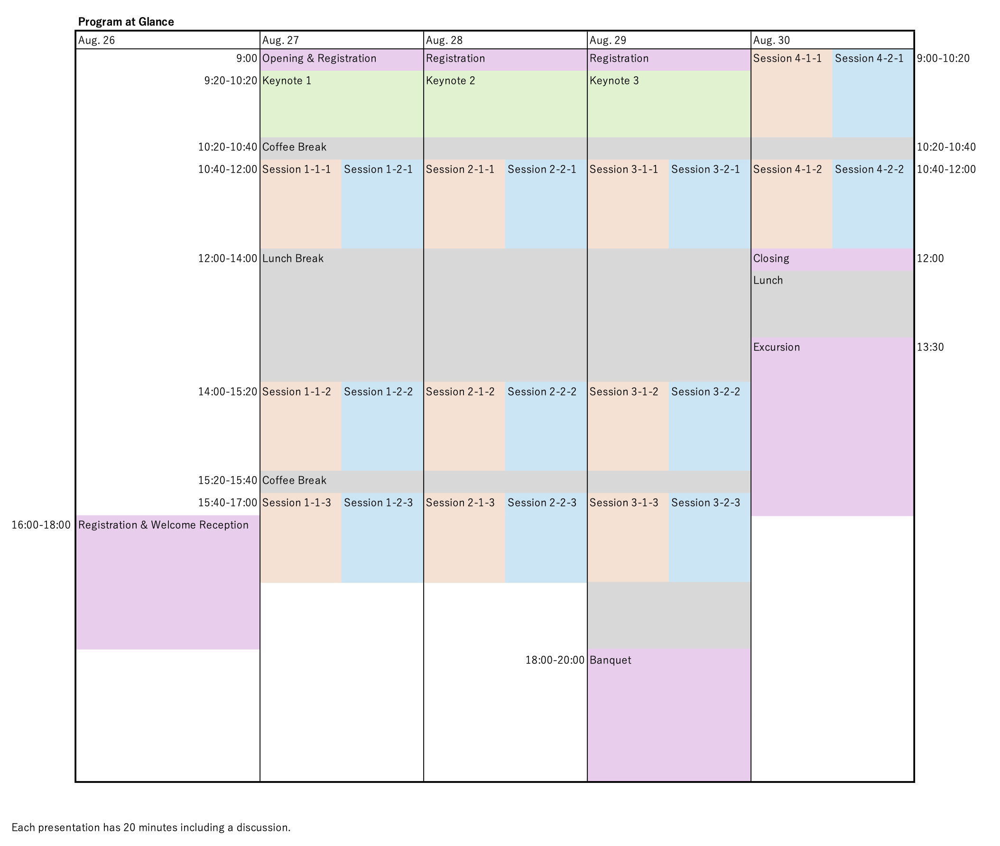

Program
Tentative Schedule

- Please note that this schedule is subject to changes as we continue to refine our conference program.
- In principle, all speakers of conference sessions must present in person at the conference venue.
Keynote Speakers
Prof. Tadashi Dohi
Title: Multimodel Inference in Software Reliability
Accurate prediction of the cumulative number of software faults as well as quantitative software reliability has been still a challenging issue in software reliability for a long time. Especially, weighted combinational models based on multiple software reliability growth models (SRGMs) have received a considerable attention to improve the prediction accuracy, but have not been satisfactorily formulated during the last five decades. In this paper, we develop novel approaches to predict the future behavior of the cumulative number of software faults detected in the system testing, by means of multimodel inference consisting of both the model averaging and clustering techniques, where the underlying SRGMs are described by the common non-homogeneous Poisson processes. The model averaging techniques employed here possess an information-theoretic and frequentist perspective, and are characterized by well-known information criteria to determine the each model weight. Several clustering techniques are also applied to cluster the underlying SRGM candidates for prediction. In comprehensive numerical experiments with both time-domain and time-interval software fault count data, we compare our SRGM averaging techniques with the common approach based on the single use of SRGM. It is shown with actual software fault count data that SRGM averaging enabled us to improve the prediction accuracy significantly.
Bio: Dr. Tadashi Dohi received the Bachelor of Science in Engineering (B.S.E.), Master of Science (M.S.), and Doctor of Engineering (Dr. of Eng.) degrees from Hiroshima University, Japan, in 1989, 1991, and 1995, respectively. In 1992 he joined as an Assistant Professor in the Department of Industrial and Systems Engineering, Hiroshima University. In 1992 and 2000, he was a Visiting Research Scholar in the Faculty of Commerce and Business Administration, University of British Columbia, Canada, and Hudson School of Engineering, Duke University, USA, respectively, on the leave absent from Hiroshima University. Since 2002, he has been working as a Full Professor in Hiroshima University. He is now the Dean of the School of Informatics and Data Science, and the Associate Dean of the Graduate School of Advanced Science and Engineering, Hiroshima University.
His research areas include Reliability Engineering, Software Reliability, Dependable Computing, Performance Evaluation, Computer Security and Operations Research. He is a Regular Member of ORSJ, IEICE, IPSJ, REAJ and IEEE. He published over 670 peer-reviewed papers (280 journal papers and 350 conference papers), 45 book chapters, and 25 edited books/proceedings in the above research area. Dr. Dohi served as a General Chair/Program Committee Chair of over 20 international events, and worked as a Program Committee Member in many international premier conferences such as DSN, ISSRE, EDCC, SRDS, HASE, QRS, ICPE, SAC, among others. He is an Associate Editor/Editorial Board Member of a dozen of international journals including IEEE Transactions on Reliability. He is one of Founders of AIWARM/APARM and served as the Steering Committee Chair.
His research areas include Reliability Engineering, Software Reliability, Dependable Computing, Performance Evaluation, Computer Security and Operations Research. He is a Regular Member of ORSJ, IEICE, IPSJ, REAJ and IEEE. He published over 670 peer-reviewed papers (280 journal papers and 350 conference papers), 45 book chapters, and 25 edited books/proceedings in the above research area. Dr. Dohi served as a General Chair/Program Committee Chair of over 20 international events, and worked as a Program Committee Member in many international premier conferences such as DSN, ISSRE, EDCC, SRDS, HASE, QRS, ICPE, SAC, among others. He is an Associate Editor/Editorial Board Member of a dozen of international journals including IEEE Transactions on Reliability. He is one of Founders of AIWARM/APARM and served as the Steering Committee Chair.
Prof. Yan-Fu Li
Title: Recent Research Progresses on Optimal System Reliability Design
Optimal system reliability design is an important research field in reliability engineering. Since the 1950s, extensive studies have been conducted on various aspects of this issue. This field remains highly active today due to the need to develop new generations of complex engineering systems, such as 5G telecom networks and high-performance computing clusters, which are expected to be highly reliable to meet the stringent, dynamic, and often real-time quality demands of system operators and end-users.
Over the past five years, numerous new researches on optimal system reliability design have been published, addressing the theoretical challenges posed by the new engineering systems. This presentation will systematically review these works with the focus on theoretical advancements, including the models and methods for redundancy allocation problem, redundancy allocation under mixed uncertainty, joint reliability-redundancy allocation problem and joint redundancy allocation and maintenance optimization. Through analysis and discussions, we will outline future research directions.
Bio: Dr. Yan-Fu Li is currently the Director of the Institute for Quality & Reliability and a full professor at the Department of Industrial Engineering in Tsinghua University, China. From 2011 to 2016, he was a faculty member at CentraleSupélec in Université Paris-Saclay, France. His research areas mainly include system reliability and PHM with the applications onto various complex engineering systems. Dr. Li has published over 100 peer-reviewed high quality international journal papers. He is elected as the Highly Cited Chinese Researcher 2019-2022 by Elsevier and Top 2% Scientists Worldwide 2022 by Stanford University. He is the Principal Investigator (PI) of several government projects including the key project funded by National Natural Science Foundation of China and National Key R&D Program of China. He is also experienced in industrial research, the long-term partners include the top enterprises such as Huawei, China Southern Power Grid, etc. He has won multiple national society and international society search/paper awards. He is currently an Associate Editor of Reliability Engineering & System Safety, IEEE Transactions on Reliability, a senior member of IEEE and IISE. He is a vice president of the System Reliability Chapter of System Engineering Society of China.
Prof. Won Young Yun
Title: Mean Residual Life-based Replacement in Multi-Unit Systems
In this talk, we deal with a preventive replacement problem for multi-unit systems. First, we assume that the units in systems are identical, and the failures of units are independent and follow an exponential distribution. Secondly, it is assumed that the replacement time is negligible, the fixed and variable costs to replace failed units are included, and the expected cost rate is used as an optimization criterion.
We propose a preventive replacement policy based on the mean residual life of the system. If the system is failed before the mean residual life of the system is greater than the specified threshold (the decision variable), then the system is replaced correctively. Otherwise, the system is replaced preventively when the mean residual life of the system is less than the threshold. A procedure to obtain the expected cost rate is developed and an algorithm to find the optimal threshold of the mean residual life is also proposed under some well-known system structures in reliability.
Numerical examples are studied to know the effects of model parameters on the optimal solutions in various system structures. The optimality of the policy proposed is investigated by some machine learning techniques approximately in cases of discrete failure distributions. For further studies, we analyze preventive replacement policies for extended failure and cost models and promising optimization problems.
Bio: Dr. Won Young Yun is a Professor in Department of Industrial Engineering, Pusan National University, Korea. He received his B.S. degree in Industrial Engineering from Seoul National University, Korea, in 1982 and his M.S. and Ph. D. degrees in Industrial Engineering from KAIST, Korea, in 1984 and 1988, respectively. His current research interest includes maintenance optimization of complex systems, machine learning applications in reliability and maintenance. He has published his papers in international journals of reliability and operations research, for example, IEEE Transactions on Reliability, Reliability and System Safety, IIE Transactions, International Journal of Production Economics, etc.